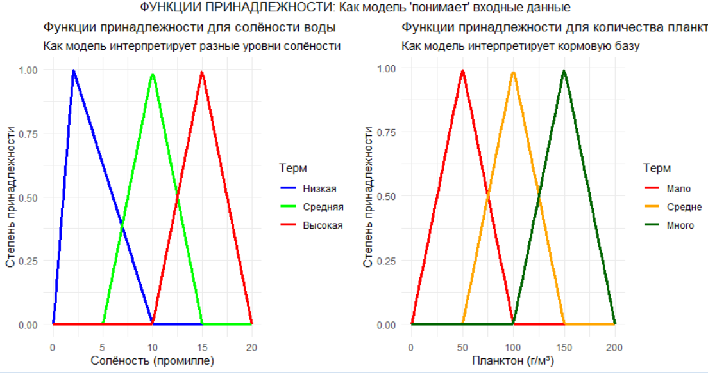
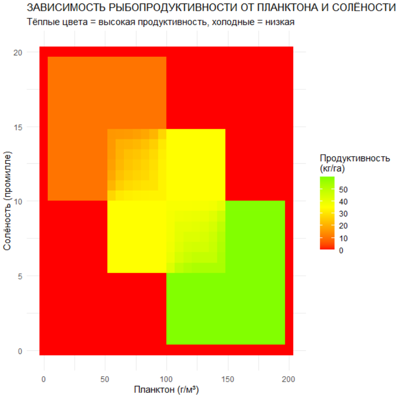

32 Нечеткая логика
32.1 Введение
В традиционной рыбохозяйственной науке мы зачастую имели дело с миром бинарной логики Аристотеля — “да или нет”, “присутствует или отсутствует”, “зрелый или незрелый”. Но природа редко мыслит категориями двоичного кода. Возьмите простейший пример — определение половой зрелости у протоандрических креветок. Где та магическая точка на шкале длины карапакса, когда особь перестает быть самцом и становится самкой? Биологический процесс смены пола — это не мгновенное событие, а постепенный переход, растянутый во времени, с индивидуальными вариациями. Классическая логика заставляет нас выбирать произвольный порог — L50, 50%-ная точка созревания. Но реальность гораздо богаче — каждая особь имеет свою собственную траекторию развития, определяемую генетикой, условиями среды, историей питания.
Философский прорыв, совершенный Лотфи Заде в 1965 году, заключался в простой, но революционной идее — отказе от закона исключенного третьего. В природе между “истиной” и “ложью” существует бесконечное множество промежуточных состояний. Когда мы говорим “глубоководная зона”, что мы подразумеваем? 200 метров? 1000? 3000? В реальности особи краба не исчезают мгновенно при переходе через некую магическую глубину — их индекс обилия плавно убывает по мере увеличения глубины, создавая нечеткую границу местообитания. Именно эта плавность, эта градуальность перехода и составляет суть нечеткой логики.
Особую элегантность нечеткий подход демонстрирует при работе с экспертной информацией. Рыбаки-практики, десятилетиями работающие на одних и тех же акваториях, оперируют не числами и формулами, а лингвистическими переменными: “высокая концентрация”, “средняя глубина”, “сильное течение”. Традиционные статистические методы заставляют нас оцифровывать эти знания, теряя их нюансы и контекст. Нечеткая логика позволяет сохранить эту лингвистическую природу экспертного знания, преобразуя высказывания вроде “если глубина большая и температура низкая, то вероятность встречи рыбы моей мечты высокая” в формальные математические конструкции.
В основе нечеткого моделирования лежит концепция функций принадлежности — плавных кривых, описывающих, насколько тот или иной объект соответствует нечеткому множеству. Например, мы можем определить нечеткое множество “крупные особи” через функцию принадлежности, которая плавно возрастает от 0 для мелких особей к 1 для действительно крупных. Это позволяет избежать искусственного разделения на “мелких” и “крупных” по произвольному порогу, сохраняя непрерывность биологического процесса роста.
Когда мы объединяем нечеткую логику с пространственным моделированием, мы получаем мощный инструмент для работы с экологической неопределенностью. Карты распределения видов перестают быть бинарными — “есть/нет” — и становятся полями вероятностей, отражающими постепенные переходы между местообитаниями. Это особенно важно для мигрирующих видов, чье распределение меняется в течение сезона, создавая размытые, динамичные границы ареалов.
Интеграция нечеткой логики с нейронными сетями и методами машинного обучения открывает еще более интересные перспективы. Нейро-нечеткие системы позволяют обучаться на данных, сохраняя при этом интерпретируемость правил — мы можем понять, какие именно экологические факторы и в какой комбинации влияют на распределение видов, даже если эти зависимости нелинейны и сложны.
В практическом плане нечеткое моделирование может найти применение в задачах промыслового прогнозирования, где нам приходится учитывать множество неопределенных факторов — от климатических аномалий до экономических условий. Традиционные детерминированные модели часто оказываются слишком жесткими для такой многомерной, зашумленной реальности. Нечеткие же системы позволяют работать с неточными входными данными, выдавая при этом надежные, робастные прогнозы.
Но возможно самое важное философское следствие нечеткого подхода — это изменение самого стиля научного мышления. Мы перестаем искать единственно верные ответы и начинаем работать с вероятностями, неопределенностями, степенями уверенности. Это смиренное признание того, что природа сложнее наших моделей, что наши знания всегда частичны и контекстны. В мире, где климатические изменения делают морские экосистемы все более непредсказуемыми, такая эпистемологическая скромность становится не недостатком, а преимуществом.
Поэтому, приступая к изучению конкретных методов нечеткого моделирования, помните — вы осваиваете не просто еще один математический аппарат, а принципиально иной способ мышления о природных системах. Способ, который уважает их сложность, признает их нелинейность и ценит их неопределенность. В конечном счете, нечеткая логика — это не о том, чтобы найти идеальную модель, а о том, чтобы научиться задавать правильные вопросы в диалоге с непредсказуемой, но прекрасной сложностью морской жизни.
Сегодняшнее практическое занятие основано на научной статье О.Ф. Дяченко (2014) “НЕЧЕТКАЯ МОДЕЛЬ ДЛЯ ОЦЕНКИ РЫБОПРОДУКТИВНОСТИ АЗОВСКОГО МОРЯ” (Вестник ХНТУ, №1(48)), посвященной построению нечёткой модели для оценки рыбопродуктивности Азовского моря. В своей работе автор предлагает использовать аппарат теории нечётких множеств и логики для прогнозирования объёмов возможных уловов, что особенно актуально в условиях изменяющейся экосистемы моря, подверженной значительному антропогенному влиянию. В статье рассматривается комплекс факторов, влияющих на продуктивность двух основных групп рыб — планктоноядных и бентосоядных, таких как количество корма, солёность воды, объём пресного стока и индекс загрязнённости. Для формализации этих факторов автор использует лингвистические переменные, задаёт для них функции принадлежности треугольного вида и строит базу нечётких правил по методу Мамдани*, содержащую 26 продукций.
Для нашего практического занятия мы существенно упростили предложенную модель, чтобы сделать её более наглядной и доступной для понимания основных принципов нечёткого моделирования. Вместо четырёх входных параметров мы оставили только два ключевых фактора: количество планктона и солёность воды, которые наиболее сильно влияют на рыбопродуктивность в условиях Азовского моря. База правил была радикально сокращена до трёх базовых правил, отражающих фундаментальные биологические закономерности: если много планктона и низкая солёность — продуктивность очень высокая; если среднее количество планктона и средняя солёность — продуктивность средняя; если мало планктона и высокая солёность — продуктивность очень низкая.
32.2 Скрипт
Скрипт целиком.
Выполняемый на занятии скрипт реализует именно эту упрощённую модель и служит обучающим модулем для гидробиологов. Его работа заключается в том, чтобы продемонстрировать полный цикл нечёткого вывода: от задания функций принадлежности через треугольные функции до получения итоговой количественной оценки продуктивности. Скрипт позволяет работать как с точными числовыми данными, так и с качественными лингвистическими описаниями, что особенно ценно в условиях недостатка точных измерений. По ходу выполнения скрипт строит и выводит два ключевых рисунка. Первый рисунок — это сдвоенный график функций принадлежности для входных переменных, который наглядно показывает, как модель интерпретирует количественные значения планктона и солёности в качественные термины “мало-средне-много” и “низкая-средняя-высокая”.

Второй рисунок — это тепловая карта, которая визуализирует зависимость рыбопродуктивности от совместного изменения двух факторов, где цветом от красного до зелёного показана рассчитанная продуктивность в кг/га, что позволяет сразу идентифицировать оптимальные и неблагоприятные сочетания условий. Таким образом, через упрощение и наглядность мы осваиваем фундаментальные этапы построения систем нечёткого вывода, лежащие в основе более сложных научных и инженерных приложений в области экологического моделирования и управления водными ресурсами.

*Метод Мамдани — это способ принятия решений в условиях неполной и “размытой” информации, который очень похож на наше профессиональное мышление.
Представьте, что вы оцениваете перспективы рыболовства в акватории. Вы не оперируете точными цифрами, а рассуждаете примерно так:
“ЕСЛИ количество планктона большое И солёность низкая, ТО продуктивность будет высокой”
Вот именно такие качественные, “человеческие” суждения метод Мамдани и формализует. Давайте разберем его по шагам:
1. Фаззификация (перевод в нечёткие понятия)
Мы преобразуем точные измерения в степени принадлежности к нечётким терминам. Например:
Измерение: 150 г/м³ планктона
Наше восприятие: на 0.8 соответствует термину “Много”, на 0.2 — “Средне”
2. Применение правил (логический вывод)
Создаётся база правил, основанная на нашей экспертизе:
ПРАВИЛО 1: ЕСЛИ "Планктон = Много" И "Солёность = Низкая" ТО "Продуктивность = Очень_Высокая" ПРАВИЛО 2: ЕСЛИ "Планктон = Средне" И "Солёность = Средняя" ТО "Продуктивность = Средняя"Каждое правило активируется в той степени, в которой выполняются его условия.
3. Агрегация (объединение результатов)
Все сработавшие правила объединяются, создавая общую “картину” возможной продуктивности.
4. Дефаззификация (перевод в число)
Преобразуем нечёткий вывод обратно в конкретное число — например, 52.3 кг/га продуктивности.
Почему этот метод особенно полезен для гидробиологов?
Работает с нашими качественными оценками: когда точных данных нет, но есть экспертные суждения
Учитывает природную изменчивость: параметры в экосистеме редко бывают постоянными
Прозрачность логики: правила выводятся из наших знаний, а не являются “чёрным ящиком”
Гибкость: базу правил можно дополнять и уточнять по мере накопления новых данных
По сути, метод Мамдани — это математическое воплощение нашего профессионального опыта и интуиции, позволяющее формализовать те самые качественные оценки, которые мы используем в ежедневной работе при оценке состояния водных экосистем.
32.3 Результаты
Результаты выполнения скрипта наглядно демонстрируют работу нечёткой модели оценки рыбопродуктивности . После успешной загрузки необходимых библиотек для визуализации и инициализации математического аппарата, включая треугольные функции принадлежности для планктона, солёности и итоговой продуктивности, модель перешла к фазе визуализации. Первый график отобразил функции принадлежности для входных параметров, где хорошо видно, как модель интерпретирует количественные данные в качественные категории — для солёности это зоны низких, средних и высоких значений с соответствующими цветовыми обозначениями, а для планктона аналогичным образом распределены категории “Мало”, “Средне” и “Много”. Это основа для понимания того, как нечёткая логика преобразует точные измерения в степени принадлежности к различным термам.
Второй график в виде тепловой карты показал интегральную зависимость продуктивности от совместного влияния планктона и солёности, где чётко прослеживается закономерность — зелёные зоны высокой продуктивности соответствуют областям с большим количеством планктона и низкой солёностью, тогда как красные зоны низкой продуктивности наблюдаются при малом количестве корма и высокой солёности. Эта визуализация подтверждает биологически обоснованные ожидания о том, что оптимальные условия для рыбопродуктивности в Азовском море складываются именно при таком сочетании факторов.
Особенно интересны результаты расчётов для конкретных примеров. В первом примере с благоприятными условиями — 180 г/м³ планктона и солёностью 8 промилле — модель показала продуктивность 59.99 кг/га, что находится на границе категорий “Высокая” и “Очень высокая”. Анализ степеней принадлежности раскрывает внутреннюю логику модели: планктон со значением 0.4 отнесён к категории “Много”, а солёность демонстрирует смешанную характеристику с преобладанием “Средней” (0.6) при наличии “Низкой” (0.25), что в совокупности и дало такой высокий результат. Во втором примере с неблагоприятными условиями — 30 г/м³ планктона и солёностью 18 промилле — продуктивность составила всего 10.01 кг/га, что соответствует категории “Очень низкая”. Здесь степени принадлежности однозначны: планктон с показателем 0.6 относится к “Мало”, а солёность с показателем 0.4 — к “Высокая”, что полностью активирует соответствующее правило системы.
Лингвистическая оценка продемонстрировала практическую ценность модели для работы в условиях недостатка точных данных. Все три сценария показали логичные и прогнозируемые результаты: оптимальные условия “Много планктона + Низкая солёность” дали продуктивность 60 кг/га, критические условия “Мало планктона + Высокая солёность” — 10.01 кг/га, а средние условия — 35 кг/га. Важно отметить, что модель не просто механически вычисляет значения, а воспроизводит экспертные знания о взаимосвязи факторов, формализованные в виде нечётких правил. Полученные результаты полностью соответствуют гидробиологическим представлениям о том, что Азовское море наиболее продуктивно именно в условиях сочетания обильной кормовой базы и пониженной солёности, что исторически и определяло его уникальную рыбопродуктивность.